DATA DEFINATION LANGUAGE(DDL)
DDL stands for Data defination language. It is the subset of SQL commands used to create, modify and destroy databases and database objects like tables, views etc.
Creating tables
The create command is used to crate tables to store data. The columns name in the table must be unique. Columns names can be duplicated across tables
Syntax :- create table table_name{ column_name1 datatype, column_name2 datatype .... column_nameN datatype};
Example :- create table student_record{ name varchar2(20), class varchar2(10), roll_no number(5), section varchar(1),marks number(5,2)};
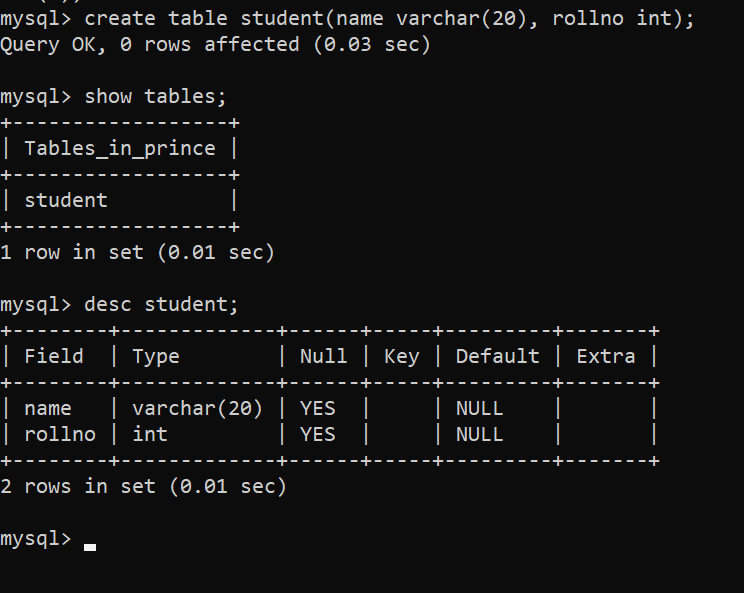
Truncating a table
The truncate command statement is used to delete all rows from a table and to release the storage space used by that table
Synatx :- truncate table table_name;
Example :- truncate table emp;
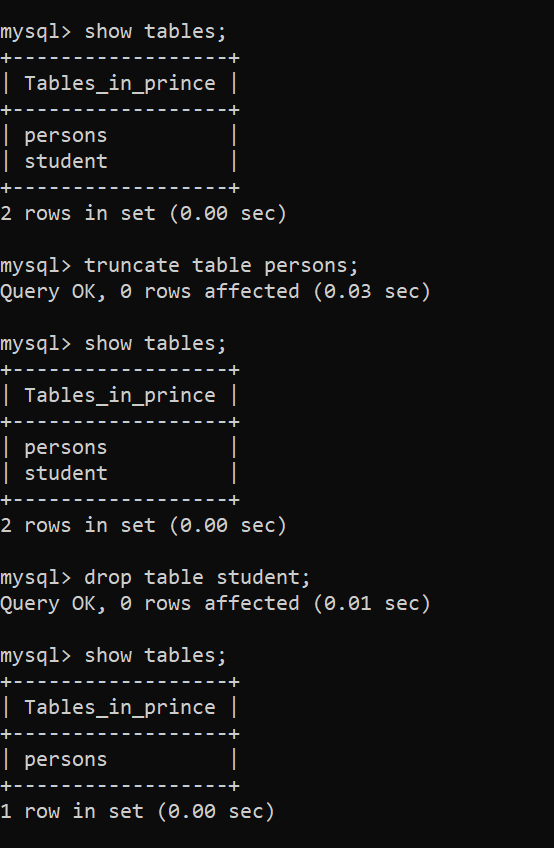
Alter
Alter statement is used to modify the defination or structure of a table by modifying definition of its columns.
Add, modify and drop table columns
Add a column using alter
Syntax to add a column :- alter table table_name add column_name datatype;
Example to add a column :- alter table emp add experience number(2);
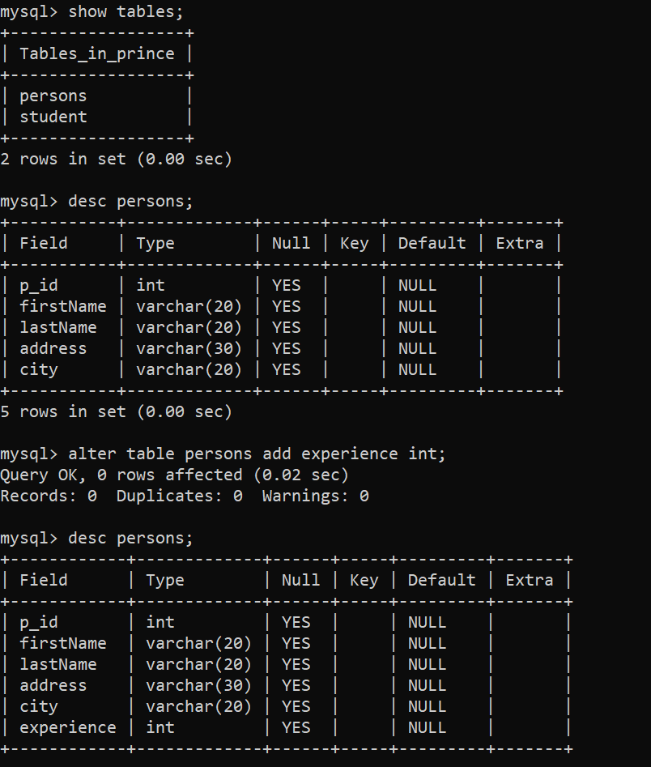
Drop a column using alter
Syntax to drop a column :- alter table table_name drop column column_name;
Example to add a column :- alter table emp drop column experience;
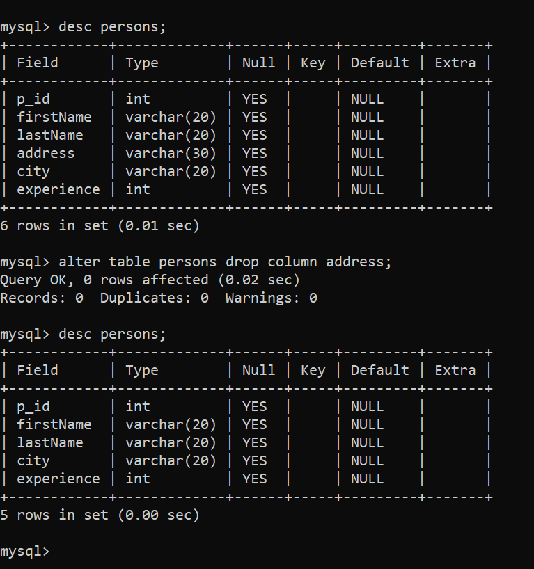
Modify a column using alter
Syntax to modify a column :- alter table table_name modify column_name datatype;
Example to modify a column :- alter table emp modify experience number(3);
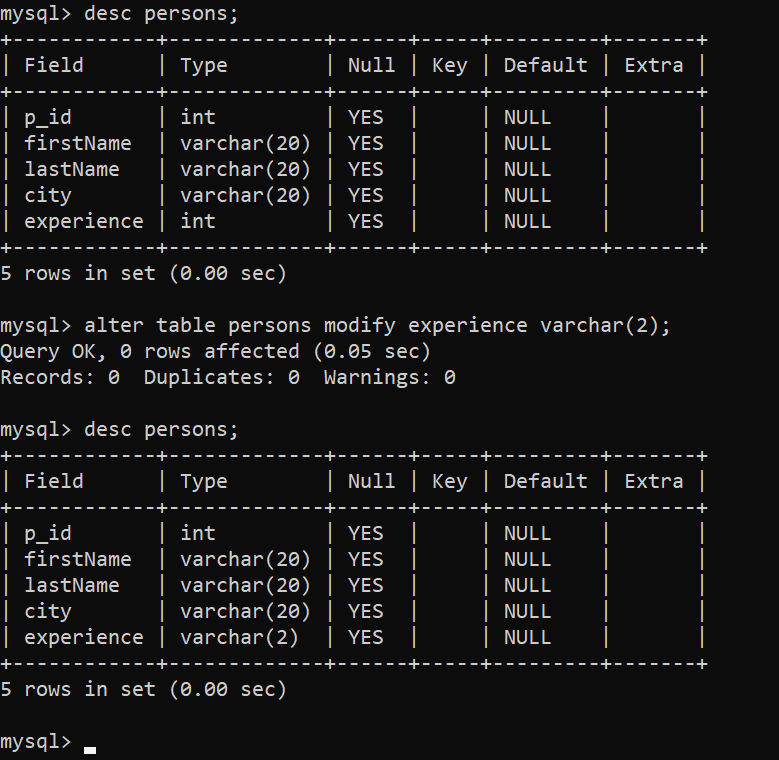
Drop table
drop statement removes the defination of a table
Syntax :- drop table table_name;
Example :- drop table emp;
DATA MANIPULATION LANGUAGE(DML)
DML stands for Data manipulation language. it is database language, which enables user to manipulation datain the database.
Inserting values into a table
Insert statement is used to insert new row or records into a table. Values can be inserted for all the columns or for the selected columns of the table.
Syntax :- insert into table_name values(value1, value2, value3, .... valueN);
Example :- insert into emp values(2736, 'prince');
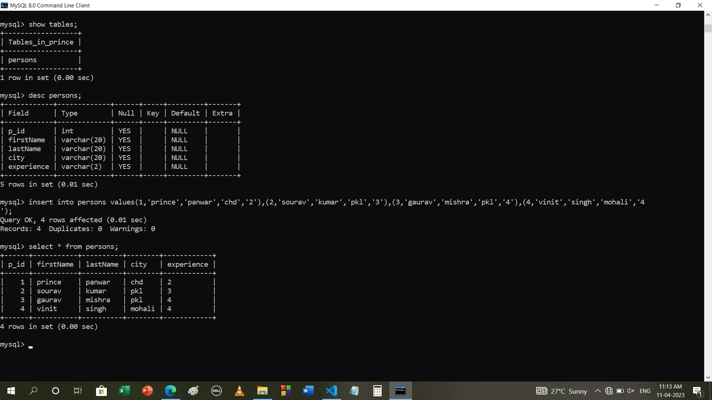
Deleting row from a table
Delete statement is used to delete rows from a table
Syntax :- delete from table_name[where condition];
Example :- delete from emp where job ='clerk';
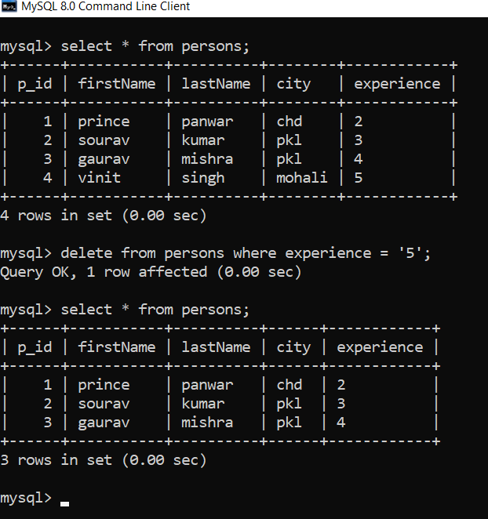
Update columns of a table
Update statement is used to update or modify the existing rows in a table.
Syntax :- update table_name set column_name1 = value1, column_name2 = value2 ... [where condition];
Example :- update emp set comm = 1000 where comm is NULL;
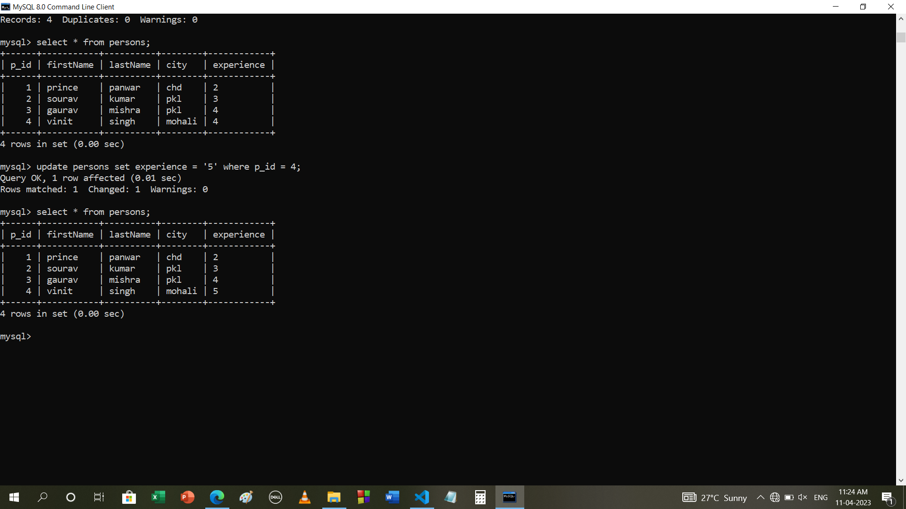
TRANSACTION CONTROL LANGUAGE(TCL)
Commit and Rollback
The commit statement is used to make changes to data (inserts, updates, deltes) permanent to the database.
The rollback statement is used to discard parts in case an error is detected during the DML operation
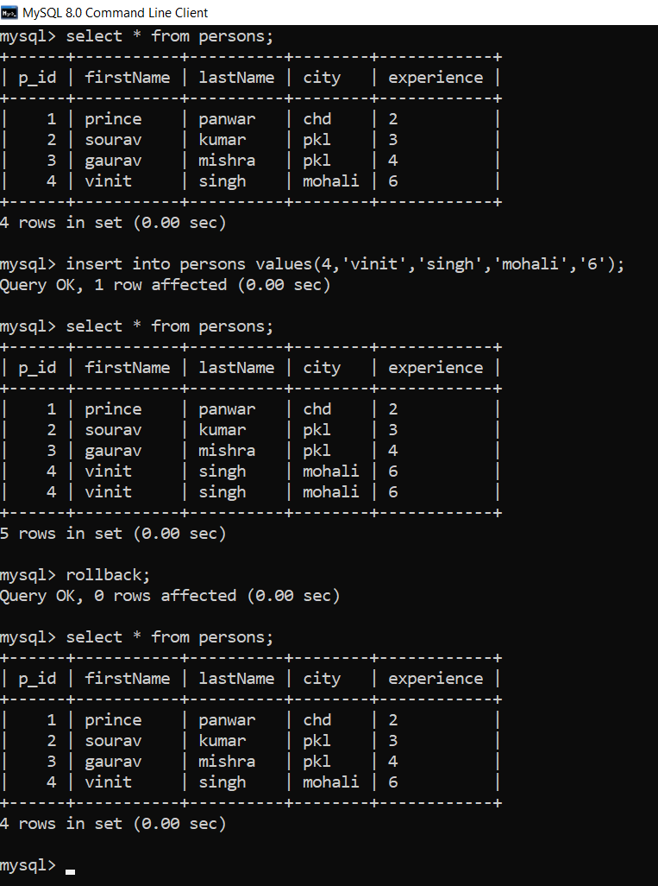
DATA QUERY LANGUAGE(DQL)
Select statement
Select statement is used to retrieve data from a table in the database. A query may retrieve information from specified columns of from all of the columns in the table.
Syntax :- select column_name from table_name [where clause] [group by clause] [having clause] [order by clause];
Example :- select ename form emp;
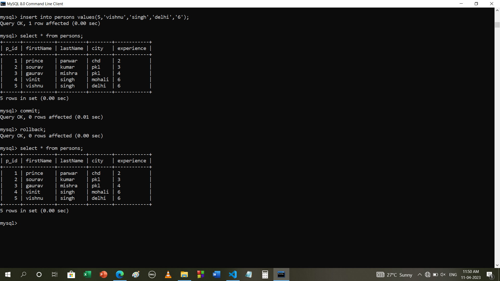
Like Operator
Like operator is used to when we want to compare the pattern of the string.
LIKE Operator is used to perform the pattern matching task in SQL.
A WHERE clause is generally preceded by a LIKE clause in an SQL query.
LIKE operator searches for a match between the patterns in a query with the pattern in the values present in an SQL table. If the match is successful, then that particular value will be retrieved from the SQL table.
Syntax of like operator
Mysql> SELECT ColumnName1, ColumnName2 FROM TableName WHERE ColumnName LIKE [Expression];
The pattern is matched using two operator with like operator
1. Underscore (_) operator
2. Percentage (%) operator
1. Underscore (_) : The underscore character ( _ ) represents a single character to match a pattern from a word or string. More than one ( _ ) underscore characters can be used to match a pattern of multiple characters.
Example of Underscore(_) operator
2. percentage (%) : The percentage sign (%) represents zero, one, or multiple characterspattern matching enables you to use % to match an arbitrary number of characters (including zero characters). In MySQL, SQL patterns are case-insensitive by default.
Example of Percentage(%) operator
AGGREGATE FUNCTIONS/GROUP FUNCTIONS
Types of Aggregate functions :-
(i) count()
(ii) sum()
(iii) max()
(iv) min()
(v) avg()
Example :- select count(*) as total_employee from emp where deptno=10;
Example :- select sum(sal) as total_salary from emp;
Example :- select max(sal) as max_salary from emp;
Example :- select min(sal) as min_salary from emp;
Example :- select avg(sal) as avg_salary from emp;
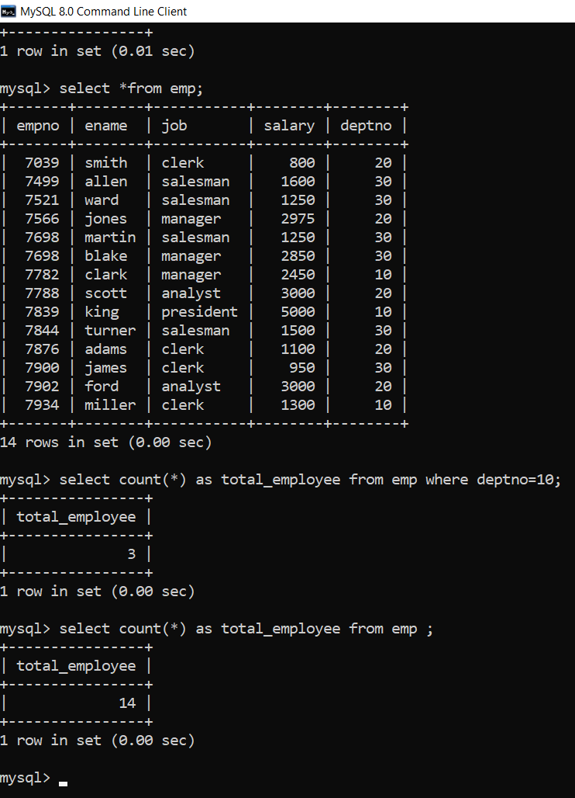
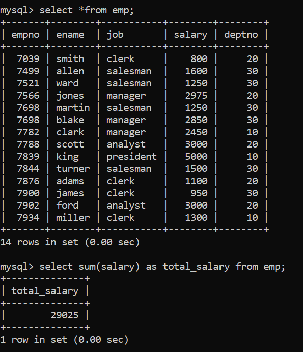
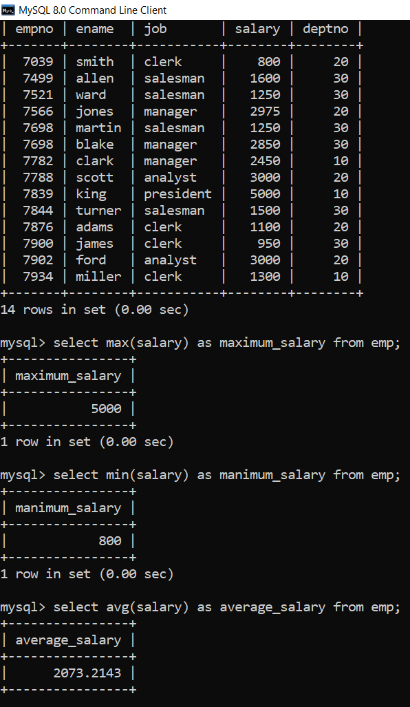
Conditional retrieval of rows
Where clause
Conditional retrieval of rows from a database table is done by specifying the condition in the WHERE clause of the SELECT statement.
Syntax :- Select column_name from table_name where condition;
Example :- Select ename from emp where deptno = 20;
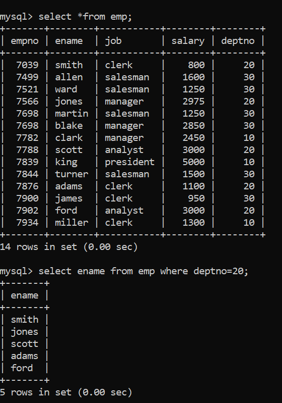
Order by clause
The order by clause to impose an order on the result of a query either in ascending or descending order.
Syntax :- Select column_name from table_name [where condition] [order by column1, column2, columnN] [asc|desc];
Example :-select ename, sal from emp order by sal;
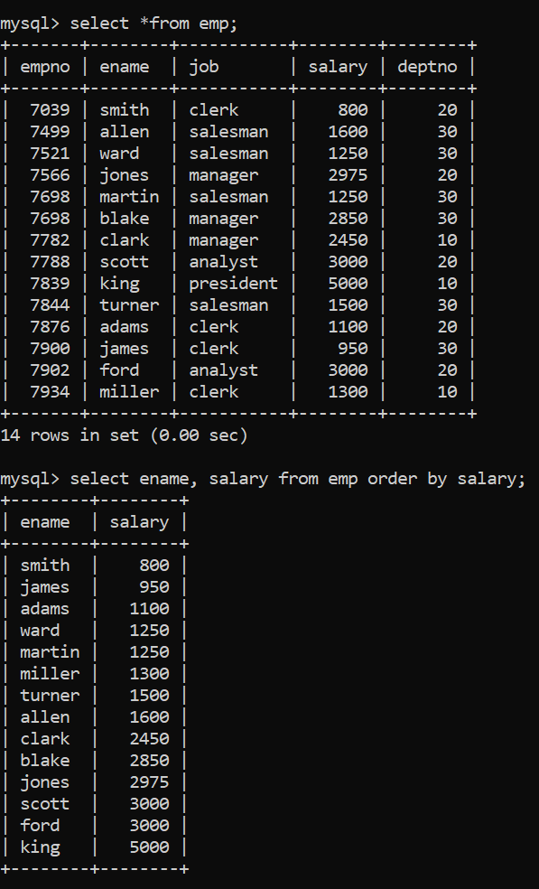
Group by clause
The group by clause is used with select statement to combine a group of rows based on the values of a particular column or expression.
Syntax :- Select column_name, group_function (column) from table_name [where condition] [group by group_by_expression] [order by column] ;
Example :-Select deptno, sum(sal) as total_salary from emp group by deptno;
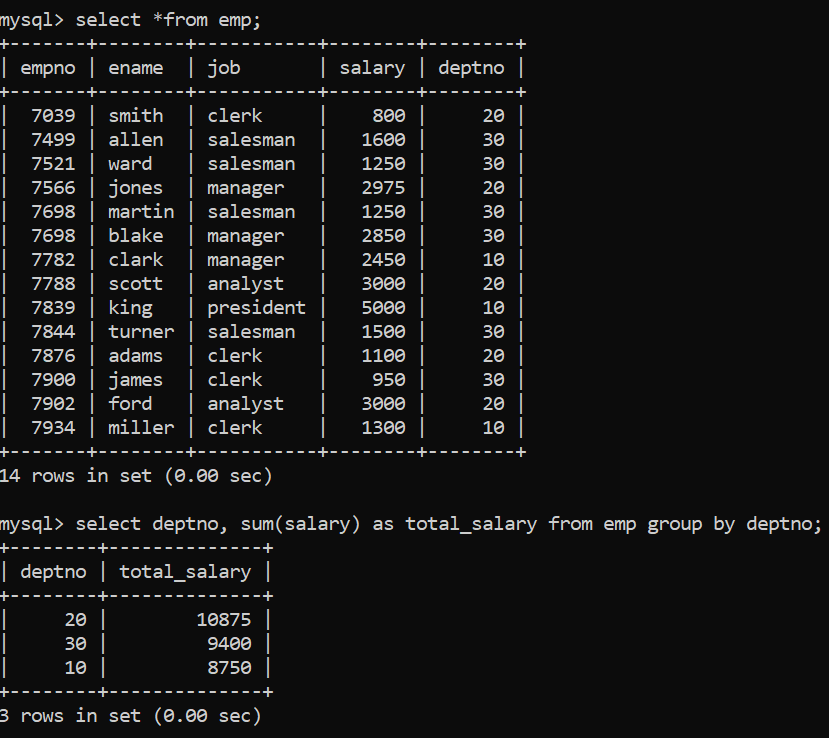
Having by clause
This is similar to where condition but is used with group functions. Group functions cannot be used in WHERE clause but can be used in HAVING clause.
Syntax :- Select column_name, group_function (column) from table_name [where condition] [group by group_by_expression] [having having expression] [order by column] ;
Example :-Select deptno, sum(sal) as total_salary from emp group by deptno having sum(sal)>1000;
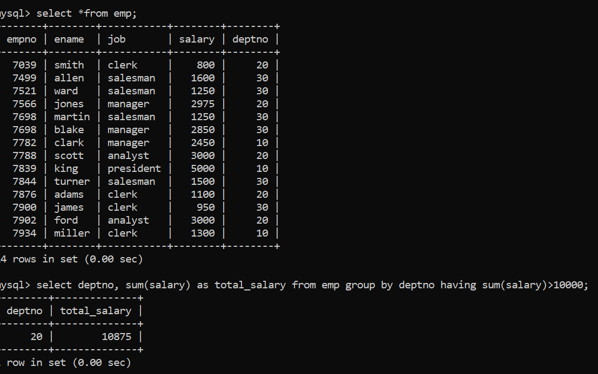
VIEWS
Introduction to views
Views is a virtual table, through which a selective portion of the data from one or more tables cal be seen. A view contains no data of its own but it is like a window through which data from tables can be viewed of changed. The tables on which a view is based are called base tables. Base tables might in turn be actual tables or might ne views themselves. All operations performed ona view actually effect the base table of the view. DML operations on a view like INSERT, UPDATE, DELETE affects the data in the original table upon which the view is based. you can use views in almost the same way as tables.
Syntax :- create view view_name as select column1, column2 from table_name [where conditon];
Example :- create view v1 as select *from emp where deptno = 20;
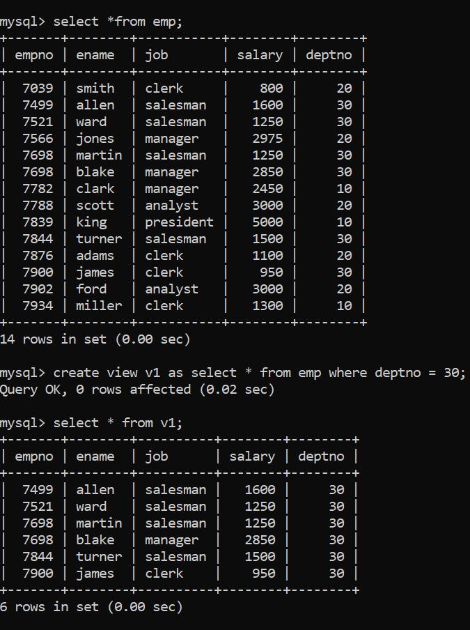
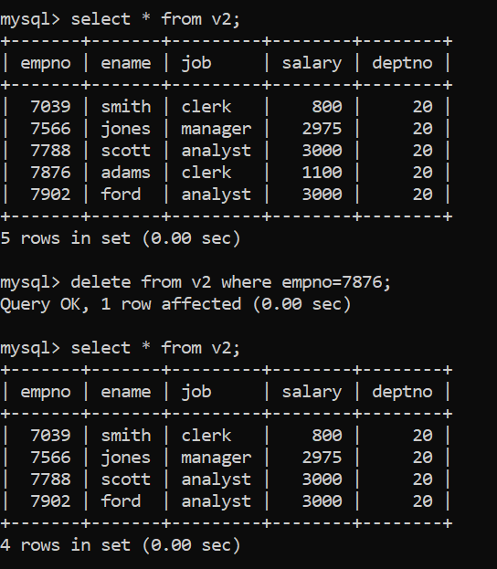
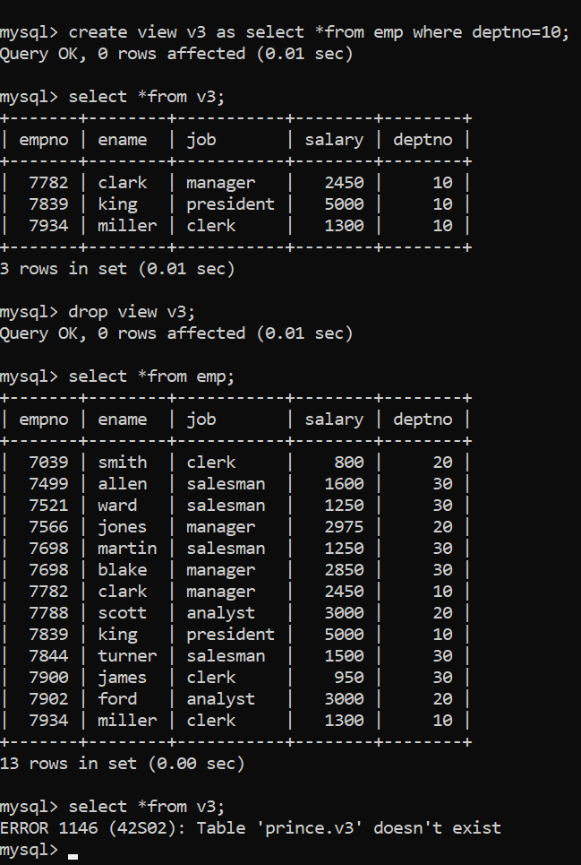
Constrains
constraints is a technique through which we can restrict a paricular column or multiple columns of a table
constraints are of two types
i. table level constraints
ii. column level constraints
Primary key constraints
when we define a primary key thn those column or columns will be unique and cannot have a null with it
Syntax :- create table table_name(col_name datatype primary key, col_nameN datatype);
Example :- create table student (rollno int constraints pk_roll primary key);
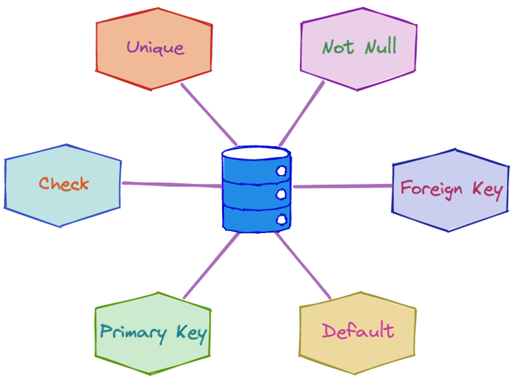
Foreign key constraints
foreign key constraints is known as referential integrity constraints
It maintains the intergrity of the data by checking the reference of the data from the primary key table
create table student_attendance(roll int foreign key references student_record(rollno), rdate date foregin key references student_active_date(rdate status text);


{kind=link}
{kind=link}
{kind=link}
{kind=link}
{kind=link}
{kind=link}
{kind=link}
{kind=link}
{kind=link}
{kind=link}
{kind=link}
{kind=link}
{kind=link}
{kind=link}
{kind=link}
{kind=link}
{kind=link}
{kind=link}
{kind=link}
{kind=link}
{kind=link}
{kind=link}